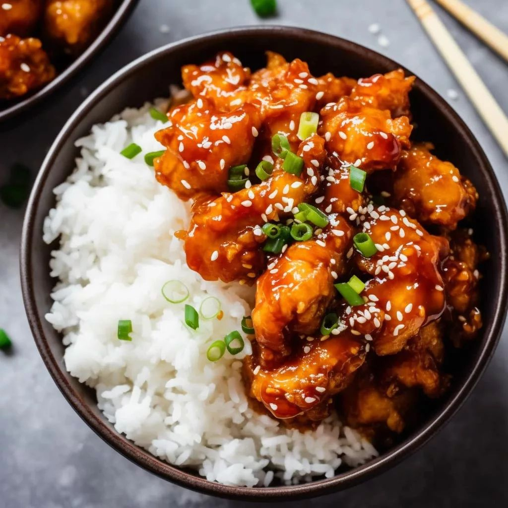
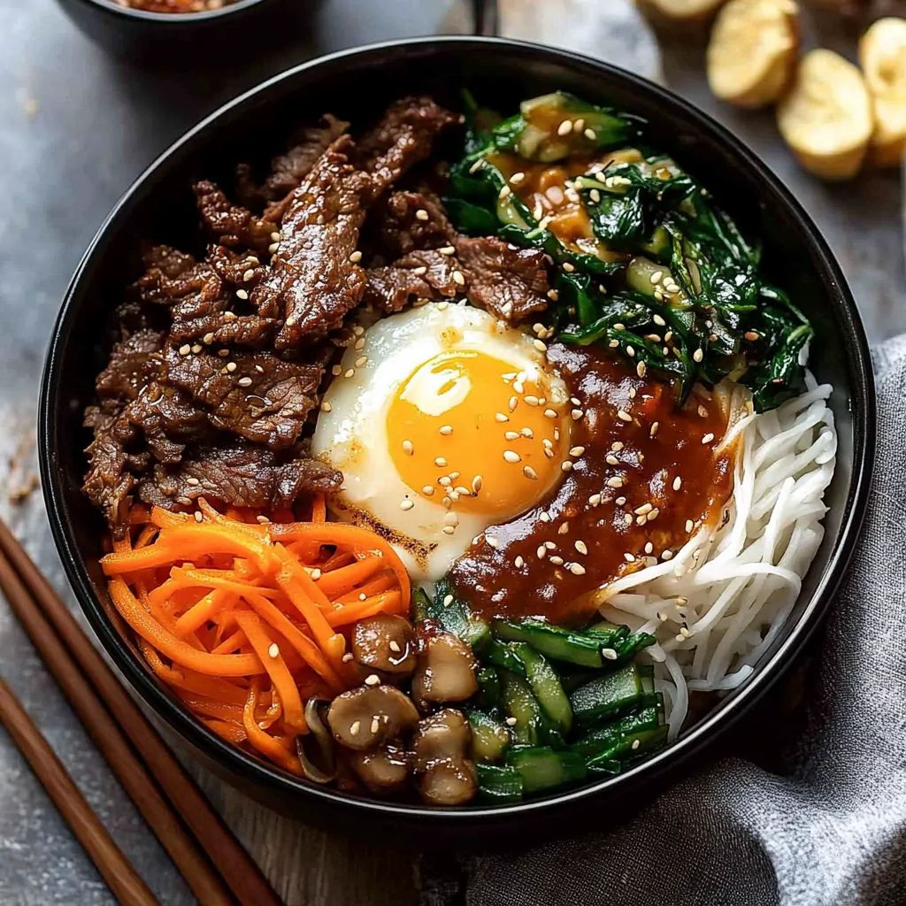
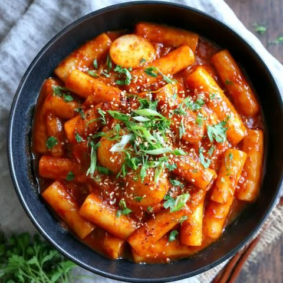
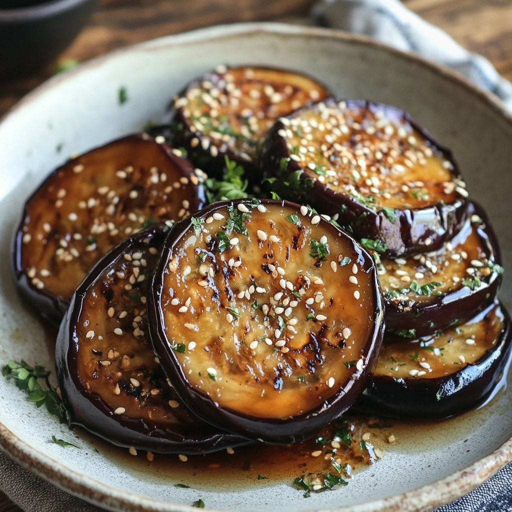
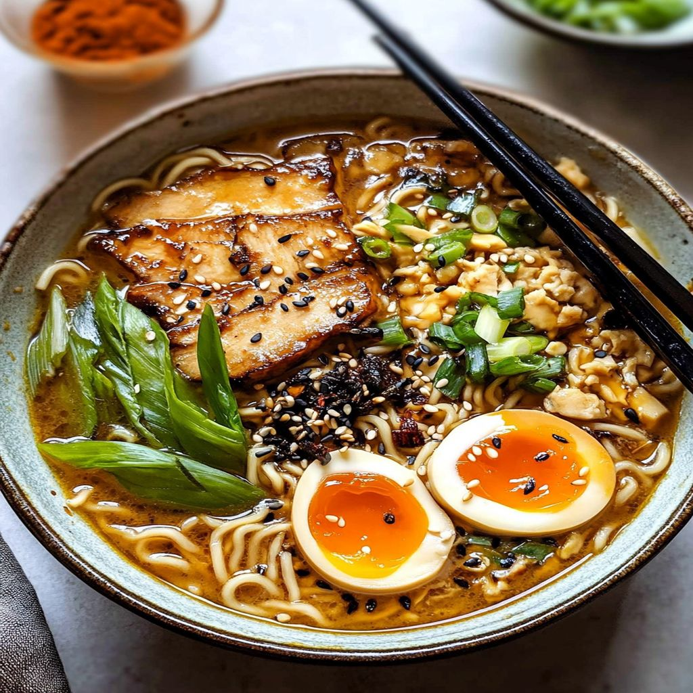
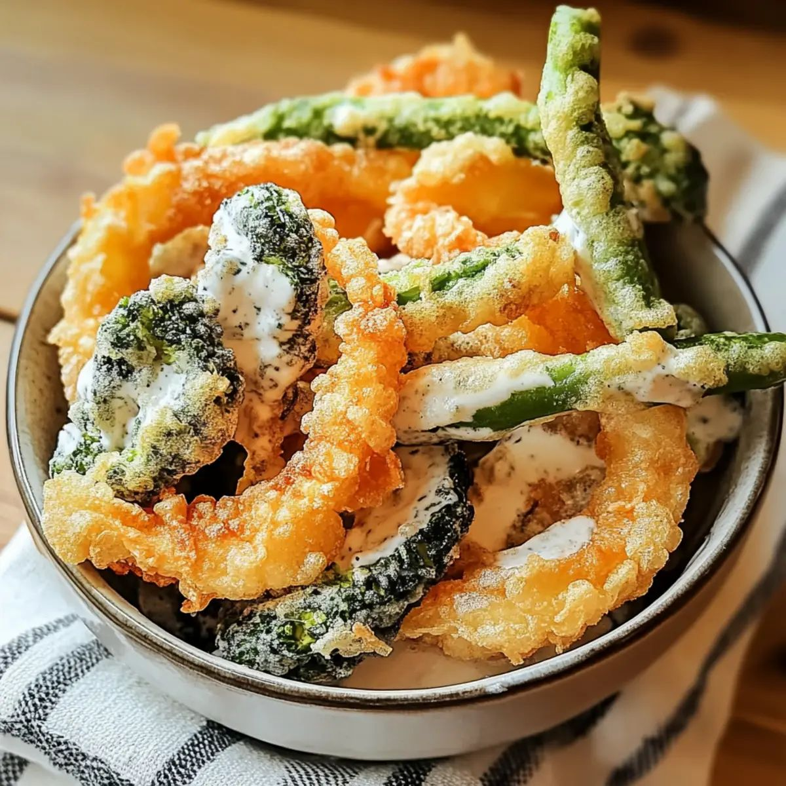
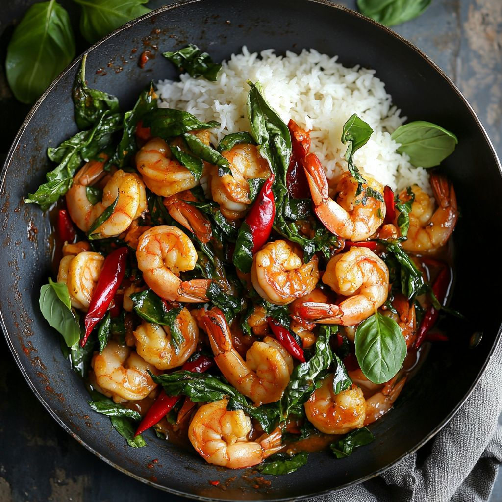
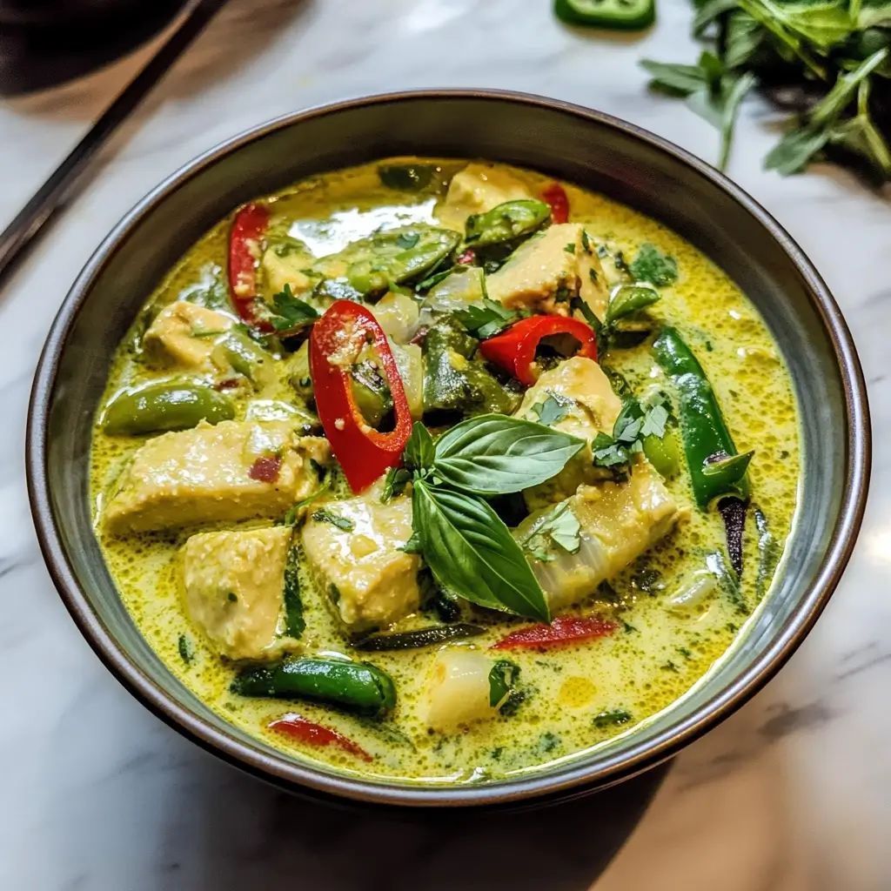
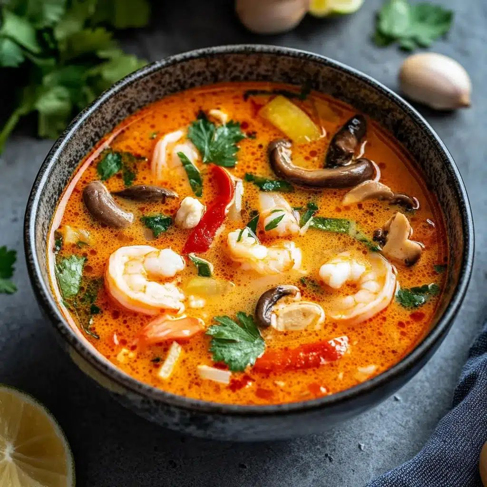

Recepies for
Soji Gochu Flavour
-

Yangnyeom
양념치킨Crispy fried chicken glazed in a glossy gochujang sauce that blends sweetness, heat, and savory notes for an irresistible finish.
-

Bibimbap
비빔밥A vibrant bowl of rice, vegetables, egg, and meat brought to life with gochujang, adding warmth, depth, and a gently spicy kick.
-

Tteokbokki
떡볶이Chewy rice cakes coated in a rich gochujang sauce, where spicy, sweet, and deep umami come together in every bite
Recepies for
White Miso Flavour
-

Eggplant
茄子のグレーズTender roasted eggplant glazed with a glossy White Miso sauce that blends sweetness, umami for an irresistible vegetable dish.
-

Ramen
ラーメンComforting ramen noodles in a rich White Miso broth that blends sweetness, umami, and savory notes for a deeply satisfying bowl.
-

Tempura
天ぷらCrispy tempura shrimp and vegetables served with a glossy White Miso dipping sauce that blends sweetness, umami, and a gentle savory finish.
Recepies for
Sweet Chili & Lime
Flavour
-

Thai Stir-Fry
ผัดกะเพราA stir-fry where the sauce coats meat or tofu with bold, aromatic flavors and a perfect balance of heat and savoriness.
-

Thai Green Curry
แกงเขียวหวานA creamy coconut curry where the sauce enriches chicken or vegetables with balanced spiciness, aromatic warmth, and deep umami.
-

Tom Yum Soup
ต้มยำA tangy, aromatic soup where the sauce infuses shrimp or chicken with vibrant heat, sweetness, and savory depth.
Explore the recipes that define each .